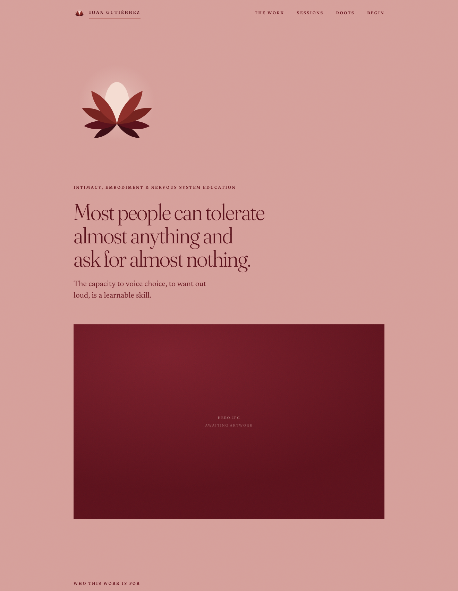

No. 04 Case study · 2026 · client
Joan Gutiérrez
A brand and marketing site for an intimacy, embodiment, and nervous-system educator — warm, calm, and editorial, built to carry the tone of the practice.
In short
- The problem
- A tender practice — intimacy, embodiment, and nervous-system work — needs a site where a vulnerable visitor feels met and safe, not sold to.
- My role
- Design & front-end build, end to end — brand feel through shipped site.
- The core constraint
- Tone is the product: calm enough for a regulated nervous system, warm enough to feel human, clear enough to invite one small step.
- The outcome
- A shipped brand + marketing site with a trust-first system — a dusty-rose ground, a literary serif, “four ways in,” and a low-pressure “begin with a conversation” as the primary action.

Overview
A home for a tender kind of work
Joan Gutiérrez teaches intimacy, embodiment, and nervous-system work. She needed a site that could hold the weight of that subject — calm enough for a regulated nervous system, warm enough to feel human, and clear enough to turn a curious visitor into a conversation. I designed and built it end to end.
Who it's for
The visitor arrives tender
Someone considering this work is often reaching toward something vulnerable — “the capacity to voice choice, to want out loud.” So the site's job isn't to sell hard; it's to make that person feel met, oriented, and safe enough to take one small step. That framing shaped every choice, from the pace of the copy to the softness of the colour.
The design
A palette and a pace that regulate
A colour that does emotional work. A soft, dusty rose — warm, low-arousal, intimate — instead of clinical white or a loud brand hue. It signals safety before a word is read.
A literary serif, at rest. A high-contrast serif carries the big statements — “Most people can tolerate almost anything and ask for almost nothing.” — giving the words room and gravity. This is writing to be felt, not scanned.
A calm architecture. “Four ways in” turns a services menu into a gentle set of doorways; “Begin with a conversation” makes the primary action a low-pressure discovery call, not a hard CTA. A quiet lotus mark anchors the identity without raising its voice.

The build
Fast, responsive, easy to keep
Designed and built as a static site in HTML, CSS, and JavaScript, so it loads instantly, reads well on a phone, and stays simple for the practice to maintain — no framework or CMS overhead where none is needed.